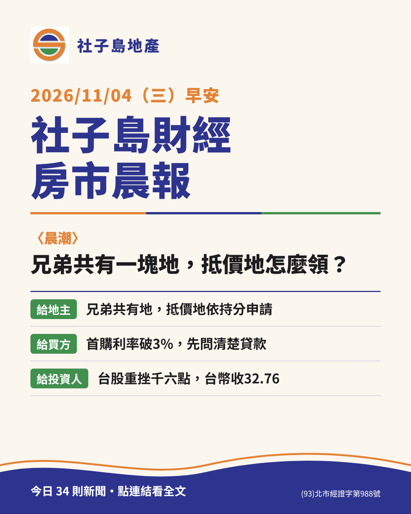

2026/11/04 (三) 早安
社子島財經房市晨報｜兄弟共有一塊地，抵價地怎麼領？
今日 34 則財經與房市新聞，依主題分成 10 類，社子島、主商圈與台北市的新聞排在最前面。點標題就能開啟原文。
〈潮汐表〉今天的三道潮水
- 給地主兄弟共有的地遇到區段徵收，抵價地原則上依各自持分申請；配地時想分在一起，要在期限內共同申請合併分配。
- 給買方房仲調查：部分銀行首購利率破3%、甚至暫停收件，公股銀撥款排到年底或明年1月；看房之前，先把貸款問清楚。
- 給投資人台股重挫1,612點、外資賣超逾千億，台幣收32.76元；美股晶片股反攻，市場等美國期中選舉結果。
〈晨潮〉
兄弟共有一塊地，抵價地怎麼領？
昨天阿公在基隆河邊問我們：「里長講，以後區段徵收，會分抵價地予阮。毋過阮有好幾个兄弟仔共有這塊地，抵價地是逐家分開領，抑是愛做伙領？若是兄弟意見無仝，欲按怎？」今天週三，我們就從這張共有的權狀聊起。
先看權狀上寫的是哪一種共有。若每個人都有寫明的持分，例如四兄弟各四分之一，這叫「分別共有」；若是爸爸過世後還沒辦分割，大家一起繼承、沒有各自的持分，這叫「公同共有」。兩種的處理方式不一樣，所以第一步，是把謄本拿出來看清楚。
分別共有的情況，抵價地原則上是依各自的持分申請。依《土地徵收條例》第40條，不想領現金補償的土地所有權人，要在徵收公告期間內，以書面向主管機關申請發給抵價地。也就是說，大哥想領地、小弟想領現金，可以各自決定，不必大家綁在一起；只是過了公告期間沒有申請，就只能領現金。公同共有的情況手續比較複雜，最好先把繼承登記與分割談清楚，實際做法請以臺北市地政局的說明為準。
兄弟共有一塊地，三件事先確認
- ① 看謄本：是「分別共有」（有寫持分）還是「公同共有」（繼承未分割）。公同共有的，先把繼承登記與分割談清楚。
- ② 各自決定：要抵價地的，在徵收公告期間內以書面申請；沒申請就只能領現金（《土地徵收條例》第40條）。
- ③ 配地前先開家族會議：持分換算的面積若未達最小分配面積，可申請合併分配或改領現金，期限與面積以市府公告為準。
那「做伙領」是什麼意思？是在分配土地的時候。每個人依持分換算出來的抵價地面積，如果太小，未達市府公告的最小分配面積，就分不到一塊能蓋房子的地；這時可以和其他兄弟、甚至其他地主申請合併分配，把幾份湊成一塊，或者改領現金。所以兄弟意見不同，不必吵到誰聽誰的：要錢的領錢，要地的再談要不要湊在一起，期限與最小面積以市府公告為準。
最後提醒一件常被忽略的事：共有土地的地價稅，公同共有時是大家連帶負責，自己那份繳清了，其他人沒繳也可能被追稅。今天「稅務與法律實務」剛好有幾則相關報導；首購利率破3%、台股重挫的消息，也都整理在新聞裡，往下滑就能看到。
——社子島地產團隊
主商圈：社子島・北士科・關渡洲美平原3 則
市長候選人提出社子島分區協商的主張，北市府回應：區段徵收計畫已於5月底報請內政部審議；北士科、關渡洲美平原這兩天沒有新的公告
台北市3 則
都更門檻要不要再降、老舊大樓怎麼重建，是這幾天台北最熱的話題；凱撒飯店三大地主已達成協議合建
市地重劃・區段徵收2 則
彰化農地重劃區抵費地20筆11月23日開標，唯一一筆建地只有6.9坪
利率・房貸・資金3 則
房仲調查：部分銀行首購利率破3%、暫停收件，公股銀撥款排到年底或明年1月
房市走向4 則
前十月六都移轉年增0.2%，北部買氣增、中南部偏弱；永和新案單價站上百萬
土地・產業用地2 則
台南神明名下土地釋出標售；統一在高雄路竹以自地委建蓋住宅
都更・合建3 則
週三談合建：永和頂溪公辦都更簽約；板橋一件合建因新增土地與容積獎勵，地主與建方的分配比例跟著變
稅務與法律實務4 則
今天〈晨潮〉談兄弟共有的地，這幾則正好是共有土地的地價稅提醒：公同共有，繳清自己那份也可能被追稅
高齡與人口3 則
65歲以上長者超過467萬人，照顧的壓力落在家庭；地方陸續蓋起全齡照顧據點
今日財經大事7 則
台股重挫1,612點、外資賣超逾千億；台幣收32.76元，外匯成交量史上第4大；美股晶片股反攻
〈阿公講古〉
週三早上，阿公走到島頭的濕地，蘆葦被風吹得一片一片低下去，白鷺鷥在泥灘上慢慢踩，退潮後的水道一條一條亮著。
「原來是各人照各人的份。」阿公點點頭：「阮兄弟仔四个，細漢做伙曝菜脯，大漢各人一個想法。分開算清楚，兄弟才袂失和。」
他說小時候大水退了，泥巴裡常有招潮蟹揮著大螯，兄弟們一人一個竹簍去抓，抓多抓少，回家都倒在同一個鍋裡。「彼陣仔，啥物攏做伙；這馬，連一塊地都愛算持分。」說完自己笑了起來。
走回堤邊，他回頭看了一眼老厝的屋頂：「阮這間厝是阮阿爸家己起的，從來就無權狀。以後若拆，無權狀的厝，敢有補償？欲按怎證明這間厝是阮的？」
阿公的問題，我們明天回答。
〈廟口泡茶區〉
阿公講完古，從濕地走回廟口，榕樹下的茶已經泡好了。家裡的地是好幾個人的名字，要賣、要合建、要領抵價地，大家的意見都可以先坐下來慢慢說。
和建商合建，分回比例、時程、保證這些條件，我們陪您一條一條談清楚；共有人多的，也陪您先把家裡的意見談齊。
想問問您：您家的地，是一個人的名字，還是好幾個人共有？共有人之間，最難喬的是什麼？打個電話告訴我們，下次泡茶時一起聊。
不急著成交。我們是守在堤邊的人，守著每一塊土地的權益，直到把它交到願意耕耘它的人手上。
📞 歡迎先來電 0922-252-969先通個電話聊聊，再約時間來廟口喝茶。
 掃描 QR code，加 LINE 好友LINE ID：@shezidao💬 加 LINE
掃描 QR code，加 LINE 好友LINE ID：@shezidao💬 加 LINE
社子島地產團隊｜service@shezidao.com.tw
台北市士林區延平北路九段288號
週一至週六 9:30–18:00（週四 9:30–13:30），週日公休📞 來電 0922-252-969
本站由社子島地產開發有限公司經營，為民間不動產資訊網站，非臺北市政府官方網站；政府公告請以臺北市政府與地政局網站為準。
本期新聞由社子島地產團隊自經濟日報、聯合新聞網、中央社、自由時報、中時新聞網、工商時報、風傳媒、住展雜誌、鉅亨網、591新聞、安傳媒、MoneyDJ理財網 等媒體收集，標題照原文，點擊即可開啟原始報導；法規說明僅供參考，實際權利義務以主管機關公告為準。〈晨潮〉〈阿公講古〉為本團隊之參考意見，不構成投資建議，亦不代表支持任何候選人。〈阿公講古〉的阿公，是我們依島上長輩的身影寫成的人物。